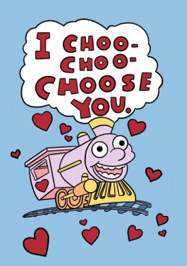
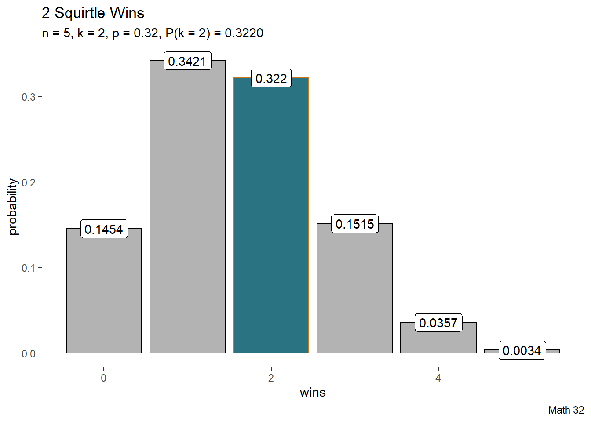
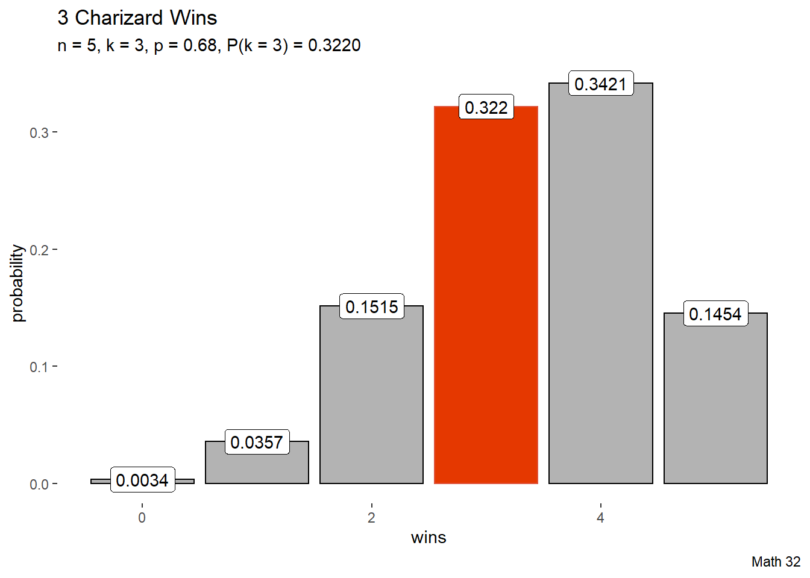
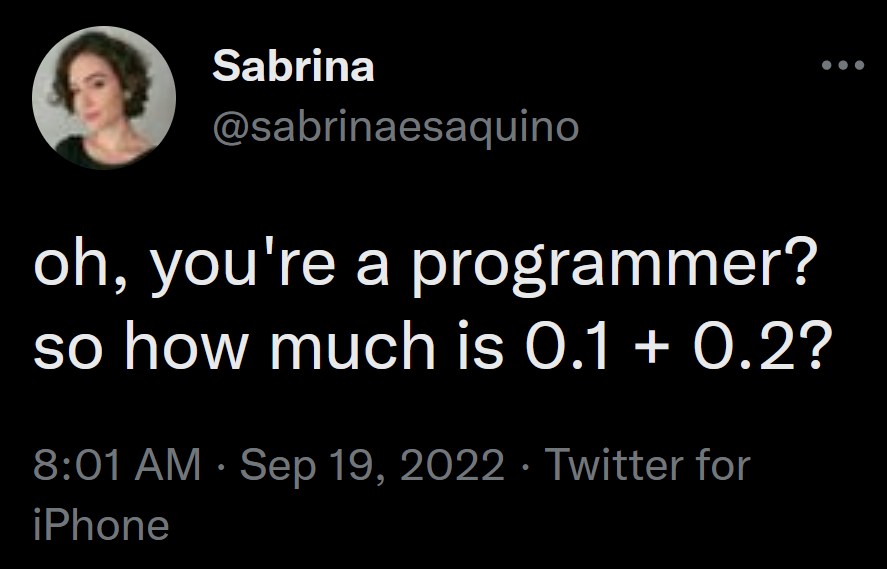

Bernoulli Trials
To continue our exploration of discrete distributions, we will look at situations that have two disjoint possibilities.
For math symbols to represent a Bernoulli trial, the events \(\{1, 0\}\) have respective probabilities \(p\) and \(1-p\).
For example, for one flip of a coin
\[P(\text{heads}) = p, \quad P(\text{tails}) = 1-p\]

Arrangements
Permutations (and the number of permutations) are the arrangements when order matters
Combinations (and the number of combinations) are the arrangements when order does not matter
Flipping 3 fair coins, what is the probability that heads will be observed exactly twice?
Choose
\[\binom{n}{k} = \displaystyle\frac{n!}{k!(n-k)!}\]
- said ``n choose k’’
- This choose operator keeps track of the number of permutations in a certain combination
- note \(0! = 1\) (to avoid dividing by zero)

Binomial Distribution
\[P(x = k) = \binom{n}{k} p^{k}(1-p)^{n-k}\]
- \(0 \leq k \leq n\), where \(n\) and \(k\) are whole numbers
- \(0 \leq p \leq 1\)
Example: Squirtle
\[P(x = k) = \binom{n}{k} p^{k}(1-p)^{n-k}\]
- \(0 \leq k \leq n\), where \(n\) and \(k\) are whole numbers
- \(0 \leq p \leq 1\)
Historically, Squirtle defeats Charizard 32% of the time. If there are 5 battles, what is the probability that Squirtle wins exactly 2 times?
Example: Charizard
Historically, Charizard defeats Squirtle 68% of the time. If there are 5 battles, what is the probability that Charizard wins exactly 3 times?
Symmetry
The previous two examples had the same answer, which is true due to a symmetry property in the choose operator:
\[\binom{n}{k} = \binom{n}{n-k}\]


k <- 0:5
pk <- dbinom(k, 5, 0.32)
k_bool <- k == 2
df <- data.frame(k, pk, k_bool)
df |>
ggplot(aes(x = k, y = pk,
color = k_bool, fill = k_bool)) +
geom_bar(stat = "identity") +
geom_label(aes(x = k, y = pk,
label = round(pk, 4)),
color = "black", fill = "white") +
labs(title = "2 Squirtle Wins",
subtitle = "n = 5, k = 2, p = 0.32, P(k = 2) = 0.3220",
caption = "Math 32",
x = "wins",
y = "probability") +
scale_color_manual(values = c("black", "#ca7721")) +
scale_fill_manual(values = c("gray70", "#297383")) +
theme(
legend.position = "none",
panel.background = element_blank()
)# plotly::ggplotly(ex2_plot)k <- 0:5
pk <- dbinom(k, 5, 0.68)
k_bool <- k == 3
df <- data.frame(k, pk, k_bool)
df |>
ggplot(aes(x = k, y = pk,
color = k_bool, fill = k_bool)) +
geom_bar(stat = "identity") +
geom_label(aes(x = k, y = pk,
label = round(pk, 4)),
color = "black", fill = "white") +
labs(title = "3 Charizard Wins",
subtitle = "n = 5, k = 3, p = 0.68, P(k = 3) = 0.3220",
caption = "Math 32",
x = "wins",
y = "probability") +
scale_color_manual(values = c("black", "#de5138")) +
scale_fill_manual(values = c("gray70", "#e53800")) +
theme(
legend.position = "none",
panel.background = element_blank()
)# plotly::ggplotly(ex2_plot)At first, it does not matter how you define the binomial setting for what corresponds to \(p\) and what corresponds to \(1-p\), but you need to be consistent in the rest of the task for how you defined your variables and use the value(s) for \(k\).
Parameters
The notation \(X \sim Ber(p)\) is read as “random variable \(X\) has a Bernoulli distribution with parameter \(p\)”. Compute the expected value and variance for a Bernoulli trial.
Parameters
The notation \(X \sim Bin(n,p)\) is read as ``random variable \(X\) has a binomial distribution with parameters \(n\) and \(p\)’’. Compute the expected value and variance for a binomial distribution.
We are assuming that the \(n\) trials are from each other, where independence in probability means that
\[P\left( \{X_{i}\}_{i=1}^{n} \right) = \displaystyle\prod_{i=1}^{n} P(X_{i})\]
In other words, we are sampling the Bernoulli trial \(n\) times with replacement, so we can simply multiply the results from the previous example by \(n\).
\[\begin{array}{|c|c|c|} \hline \textbf{mean} & \mu & np \\ \hline \textbf{variance} & \sigma^{2} & np(1-p) \\ \hline \textbf{standard deviation} & \sigma & \sqrt{np(1-p)} \\ \hline \end{array}\]
Looking Ahead
due Fri., Sept. 23:
- WHW4
- LHW4
- Demographics Part 2 (survey)
Exam 1 will be on Tues., Sept. 27
- more information in weekly announcements
